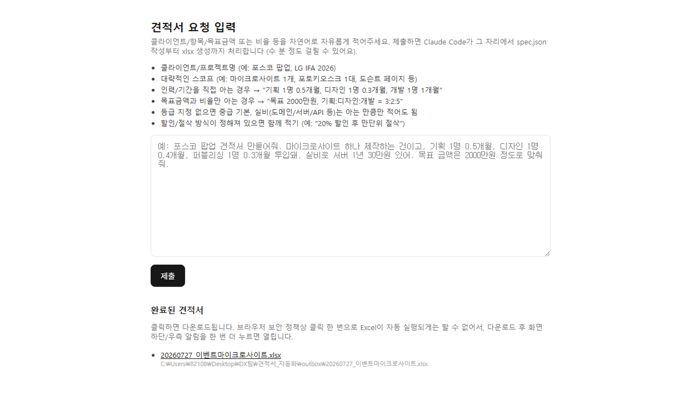
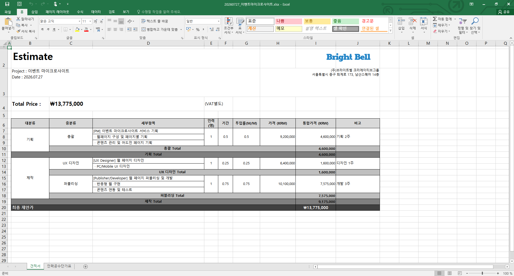

AI 구현 · 견적 자동화
매번 직접 계산하던 맨먼스 산정을 자연어 한 줄 요청으로 자동화했습니다.
프로젝트로컬 전용 견적 에이전트
산정 방식업무 범위 기반 산정 · 총예산 기반 조정
역할견적 로직 설계 · AI 흐름 설계 · 프로토타입 구현
진행할 프로젝트를 설명하면 견적 구조를 자동 구성하고 총예산이 있으면 맨먼스를 그에 맞게 조정하는 로컬 전용 에이전트입니다.
기존에는 프로젝트 요청을 확인한 뒤 과거 견적서에서 유사 항목과 업무 범위를 찾고, 사내 직급별 표준단가표를 적용해 디자인·개발 인력의 맨먼스와 금액을 매번 직접 계산했습니다. 이 반복 산정 과정을 에이전트가 재사용할 수 있는 구조로 전환했습니다.
자연어 입력부터 견적서 생성까지 6단계로 구현해 실제 업무에 사용하고 있습니다.
01자연어 입력 · 프로젝트 범위·조건 또는 총예산 입력
02업무 항목 구조화 · 디자인·개발·장치·운영 항목으로 분해
03기준 참조 · 과거 견적의 유사 항목과 투입 범위 확인
04맨먼스·금액 산정 · 직군·직급별 맨먼스 구성 및 표준단가 적용
05범위·예산 조정 · 범위 기준 총액 산정 또는 총예산에 맞춰 조정
06견적서 생성·검토 · 엑셀 견적서 출력 후 담당자 최종 조정

기능 01 · 요청 입력
한 줄 요청으로 견적 조건과 산정 방식을 입력
팀원이 별도의 입력 양식을 작성하지 않고 프로젝트 범위와 조건을 한 줄로 요청하면, 에이전트가 필요한 업무 항목과 투입 인력으로 구조화합니다. 총예산을 함께 입력하면 해당 금액에 맞춰 항목과 맨먼스를 조정하는 방식으로도 사용할 수 있습니다.
기획 의도: 별도의 입력 양식 없이 구축하려는 프로젝트를 설명하는 것만으로 견적 산정을 시작

기능 02 · 견적서 출력
맨먼스와 표준단가를 반영한 엑셀 견적서 생성
구조화한 업무 항목에 직군·직급별 맨먼스와 사내 표준단가를 적용하고, 항목·수량·단가·금액이 포함된 내부 엑셀 견적서로 생성합니다. 담당자는 프로젝트별 예외 항목과 최종 금액만 확인·조정할 수 있습니다.
기획 의도: 산정 결과를 다시 옮겨 적지 않고 실제 검토 문서로 바로 연결
참고할 데이터부터 최종 확인까지 세 가지 판단으로 산정 기준을 세웠습니다.
과거 견적서 데이터와 사내 표준단가 레이트카드 두 가지를 확보했습니다.
과거 견적서 데이터는 유사 프로젝트의 업무 항목과 투입 범위를 참고하는 기준으로 사용하고 사내 표준단가 레이트카드는 금액 계산의 기준으로 사용했습니다. 참고 기준과 가격 기준을 구분해 산정 근거가 섞이지 않도록 했습니다.
과거 유사 견적을 기준으로 산정하되 총예산이 있으면 그에 맞춰 맨먼스를 조정하도록 설계했습니다.
프로젝트를 설명하면 과거 유사 견적의 인력 구성과 맨먼스를 참고해 산정하고, 총예산까지 제시되면 같은 참고 기준 안에서 예산에 맞게 맨먼스를 조정하도록 했습니다.
산정 결과의 적합성은 담당자가 최종 확인하도록 했습니다.
에이전트는 업무 범위 또는 총예산을 기준으로 맨먼스와 견적 구조를 생성합니다. 담당자는 일정·난이도·고객사 협의 조건을 고려해 산정된 업무 항목과 투입 기준의 적합성을 최종 확인하도록 역할을 구분했습니다.
팀 전체가 반복 계산 없이 이 에이전트로 견적을 마무리합니다.
자연어 한 줄로 시작하는 입력 흐름
프로젝트 범위와 조건을 한 줄로 요청하면 업무 항목과 투입 인력으로 자동 구조화
참고 사례와 가격 기준이 섞이지 않는 정확한 산정
과거 견적서는 참고 사례로 사내 표준단가는 가격 계산 기준으로 각각 반영해 산정 오류 없이 처리
범위·예산 두 기준을 반영한 견적서 자동 생성
업무 범위 기반 산정과 총예산 기반 조정 결과를 내부 엑셀 견적서로 바로 생성
팀 전체가 실제 업무에서 사용 중
나를 포함한 팀원들이 반복 계산 대신 예외 조건 확인과 최종 협의에 집중